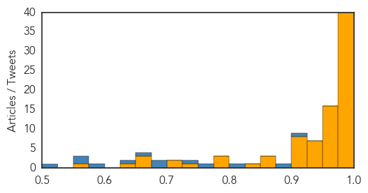
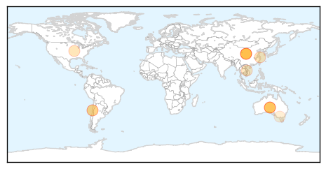

Ebola
30-Day Web Trend
0 alerts, 0 warnings

30-Day Twitter Trend
10 alerts, 2 warnings

Article Locations

Article Confidences
Top Articles:
- 1.000
- Ebola: new study models a deadly epidemic
- 0.999
- Ebola-Hit Nations Aim for No New Cases in 60 Days
- 0.999
- Ebola: British health worker brought to UK from Sierra Leone for assessment
- 0.999
- Liberia says six cases of Ebola remains nationwide
- 0.999
- Sierra Leone Sees 'Sharp Rise' in Ebola Cases as Medical Funding Goes Missing
- 0.999
- UK Health Worker Transported to Britain On Suspicion of Ebola
- 0.998
- West Africa Ebola: China sent medical teams, experts to help
- 0.998
- ECDC seeks epidemiologists for Ebola team in Guinea
- 0.997
- UNDP administrator inspects Liberia over Ebola
- 0.997
- Ebola outbreak: British NHS worker evacuated from Sierra Leone
- 0.997
- UNMEER boss commends SLAJ Yellow Ribbon campaign « Awoko Newspaper
- 0.996
- FAO unveils Guinea project for Ebola prevention, rural recovery
- 0.996
- South Africa still contributing to the fight against Ebola
- 0.995
- Ebola-Vaccine Testing May Face Problems Because of a Lack of Patients
- 0.995
- UNMEER boss commends SLAJ Yellow Ribbon campaign
- 0.994
- Ebola Is Not Over, but Liberia's Children Go Back to School Anyway
- 0.993
- Ebola risk worker back in UK
- 0.993
- Report: Long-term Ebola threat makes vaccines essential
- 0.991
- Liberia Schools Reopen After 6 Months With Increased Ebola Prevention Precautions
- 0.990
- Threat of Deadly Pathogens on the Rise Thanks to Climate Change
- 0.990
- Hopkins helps make training videos on Ebola and infectious disease care
- 0.989
- UN development chief begins last leg of West Africa mission
- 0.989
- Brit aid worker evacuated from Sierra Leone in Ebola scare
- 0.989
- Schools reopen as Liberia turns page on Ebola epidemic
- 0.988
- Liberia schools reopen after six-month Ebola closure
- 0.987
- Liberia schools reopen after 6-month Ebola closure
- 0.986
- Liberia schools reopen after six months
- 0.983
- Care International on Post Ebola Strategy « Awoko Newspaper
- 0.982
- The Post
- 0.980
- Sledding at Pleasant Plains Elementary
- 0.980
- Teen killed in Essex shootout had 6 weapons
- 0.980
- 'Everyone's a little bit racist'
- 0.980
- Without governor's input, parole commission may speed prisoner release
- 0.980
- 14 killed in Afghan terror attack
- 0.980
- WESLEY PRUDEN: Obama remains ignorant as anti-Semitism makes a comeback
- 0.980
- Md. Senate unanimously approves a Vietnam veteran day
- 0.980
- Md. woman delivers babies at 56, but dies days later
- 0.980
- Minnesota uses outreach program to combat ISIL recruiting
- 0.980
- Kentucky teen, suspect in triple homicide, was in N.J. on way to Baltimore
- 0.978
- the edge of knowledge
- 0.974
- Patient tests negative for Ebola
- 0.969
- Modern Healthcare Modern Healthcare business news, research, data and events
- 0.968
- NYC Doctor Who Contracted Ebola to Speak at Wayne State University
- 0.961
- Schools reopen in Ebola-hit Liberia
- 0.957
- Sierra Leones Rescue Team Comprised of Ebola Survivors Supporting Each Other
- 0.951
- Taylor-Era Wartime Timber Company Penalized, Accused of PUP Breach
- 0.951
- Civil Society Meet On Trial Vaccines
- 0.951
- SLPP in Suicide Mission
- 0.951
- Liberia: Lawmakers Tightlipped On Whistleblower Allison's Death
- 0.951
- Liberian refugees in Cote d'Ivoire protest to demand UN assistance
Showing top 50 articles...
Top Tweets:
- 0.912
- Ebola Update: 23182 confirmed probable and suspected cases reported in 3 most affected countries with 9353 deaths. EbolaResponse
- 0.896
- RT: 22% of patients Hosp in SL between 2011&2014 had anti-Ebola virus (EBOV) IgG or IgM suggesting prior exposure 2 Eb…
- 0.812
- RT: Samuel. Dozer driver Sierra Leone. From my ongoing project 'Ebola: workers behind the scenes. sierraleone Ebola http:…
- 0.769
- Schools in Liberia Reopen After a Six-Month Closure Due to Ebola - TIME http://t.co/MfTxyQaXQC ebola EVD
- 0.742
- We looked after three sisters with Ebola who have lost their entire family to the disease (10 people in total) - Nurse Harriet EbolaStory
- 0.679
- Baltimore Gown Designer Goes To Fashion Week With Ebola Suit - CBS Local http://t.co/zxDWHRVM8x ebola EVD
- 0.679
- Baltimore Gown Designer Goes To Fashion Week With Ebola Suit - CBS Local http://t.co/6Bkh9w2t2G ebola EVD
- 0.653
- After Ebola: What next for West Africas health systems by HumanRights https://t.co/uBWtAMD7tD - @Oximity Expand Mobile Health!
- 0.642
- U.S. Soldier Scientists begin closing down Ebola Testing Labs in Liberia - Clarksville Online http://t.co/HZXxTXiGEB ebola EVD
- 0.582
- A third of Sierra Leone's Ebola budget unaccounted for says report - The Guardian http://t.co/4J41gpSuXh ebola EVD
- 0.574
- The Grandpa Who Saved His Granddaughter From Ebola - NPR (blog) http://t.co/l7NfX4htAQ ebola EVD
- 0.557
- RT: Health worker with potential exposure to Ebola transported to UK (from Sierra Leone) for precautionary monitoring http://t.co/…
- 0.504
- Ebola outbreak: British NHS worker evacuated from Sierra Leone - http://t.co/9p21lKLIva http://t.co/oRQMtKBKV8 ebola EVD
Hepatitis
30-Day Web Trend
7 alerts, 0 warnings

30-Day Twitter Trend
0 alerts, 0 warnings

Article Locations
Article Confidences

Top Articles:
- 0.925
- Australians Get Hepatitis A From Chinese Berries
- 0.918
- Ban on golgappa proposed in Berhampur due to jaundice
- 0.881
- Australians Get Hepatitis After Eating Contaminated Berries from China
- 0.870
- Nanna's berry recall sparks Hepatitis A blood donor concern
- 0.839
- Hepatitis cases blamed on berries from China
- 0.825
- Public Health Services and Systems Research Explored in Latest Issue of the American Journal of Public Health
- 0.819
- Toxic river flows through Chinese city where hepatitis a berries are grown
- 0.772
- Photos show why we should all think twice before buying 'fresh' food from China
- 0.742
- Australian Food Company recalls Raspberry Products
- 0.717
- I have a patent for creating HIV/AIDS Virus: Dr. Robert Gallo
- 0.652
- First case of berry-related hepatitis A confirmed in WA
- 0.561
- Blood donors asked to contact Red Cross over hepatitis A fears
- 0.535
- Raspberries common link in hep A outbreak
- 0.511
- Red Cross quarantines blood over Hepatitis A berry outbreak
- 0.500
- Ballarat Secondary College students exposed to hepatitis A berries
Top Tweets:
-
No tweets found for Feb 17, 2015